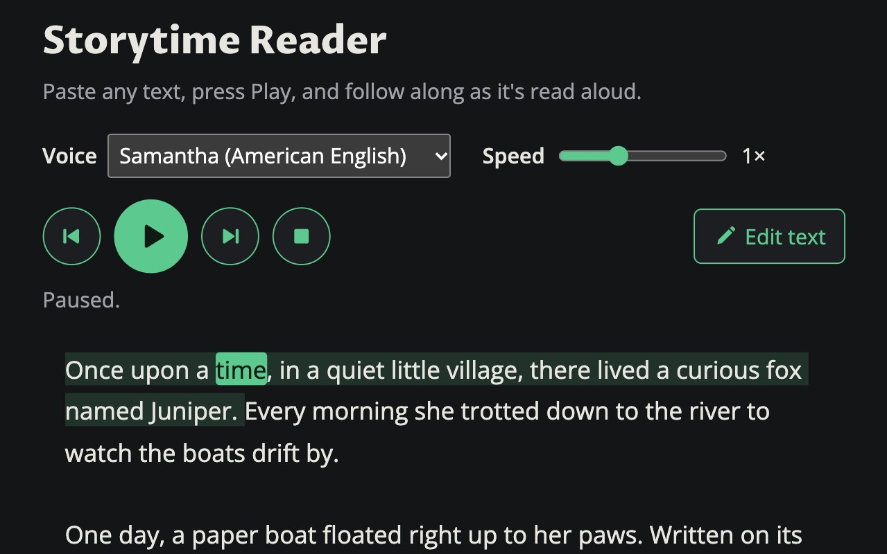

Storytime Reader
Paste any text and hear it read aloud, with each sentence and word highlighted as it's spoken. It has speed control, sentence skipping, and two kinds of voices: the ones built into your browser, and an open-source AI voice that runs right on your device.
What I learned: how to integrate a simple AI voice into a web application, and how to use the Web Speech API to read text aloud and highlight it as it's spoken.